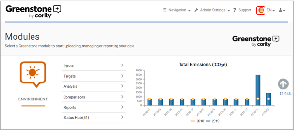
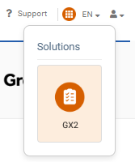

The navigation waffle (red outline) allows users to seamlessly navigate from one Cority solution to another.


To log in to GX2, Cority’s Occupational Health & Safety software, please select the waffle icon from any page and click on GX2 (red outline). Users can return to SPM through the same process in GX2.
Please note, users must have access to both GX2 and SPM to use this functionality. GX2 user accounts need to be linked to their corresponding SPM user. Contact your GX2 administrator for details.